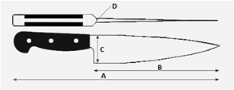
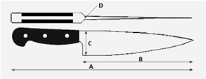

Typ Stali
MBS-26HRC
58-59Materiał rękojeści
drewno pakkawoodSposób ostrzenia
dwustronny, asymetryczny 80/20Wymiary
Długość całkowita (A)
270 mmDługość ostrza (B)
155 mmSzerokość (C)
40 mmGrubość (D)
1.8 mmWaga
83 gJest to jeden z najczęściej wybieranych noży do kuchni, zarówno przez profesjonalnych kucharzy jak i amatorów. Charakterystyczny kształt noża, wywodzący się z kuchni francuskiej wykorzystywany jest do wielu zadań kuchennych a nazwa nóż szefa kuchni, podkreśla fakt, że jest to nieodzowne narzędzie każdego kucharza. Nóż jest bardzo lekki a rękojeść pewnie leży zarówno w małych jak i dużych dłoniach. Dzięki idealnemu wyważeniu pomiędzy ostrzem a rączką pozwala na rytmiczny, bardzo wydajny, kołyszący ruch na powierzchni podczas krojenia w plastry lub siekania różnych produktów.
Masahiro MSC to noże pomyślane o użytkownikach domowych.
Nie znajdziemy tutaj wielu specjalistycznych noży o przeróżnych kształtach. Znajdziemy za to niezbędne i najczęściej wykorzystywane noże do pracy w domowej kuchni: nóż szefa kuchni, santoku oraz mały nóż uniwersalny. W ofercie jest również tradycyjny japoński nóż do krojenia warzyw - nakiri.
Stal MBS-26, która została użyta do produkcji noży z tej serii, jest wyjątkowym stopem węgla (0,85-1,00%), chromu (13-15%) oraz molibdenu, manganu i wanadu. Materiał ten zawdzięcza swoje wyjątkowe właściwości specjalnej obróbce cieplnej.
Sekret trójstopniowego procesu składającego się z hartowania, chłodzenia w bardzo niskiej temperaturze oraz odpuszczania aż do osiągnięcia twardości 58-59HRC znany jest tylko właścicielowi firmy - rodzinie Hattori. Otrzymana w ten sposób stal pozwala się zaostrzyć do niespotykanego poziomu ostrości a utrzymywanie dużej agresywności krawędzi tnącej przez bardzo długi okres czasu jest cechą charakterystyczną noży Masahiro, uznaną przez użytkowników na całym świecie.
MBS-26 należy do grupy tzw. stali nierdzewnych, nie reaguje w kontakcie z kwaśnymi produktami zamianą koloru czy zapachu. Utrzymanie noży z tego stopu w nienagannym połyskującym stanie nie stanowi żadnego problemu. Wystarcza zwykłe mycie w letniej wodzie z dodatkiem płynu do mycia naczyń. Należy tylko pamiętać aby po myciu wytrzeć nóż do sucha.
Rękojeść wykonana z drewna pakkawood została perfekcyjnie wyprofilowana i wykończona sprawiając, że trzymany nóż wydaję się być naturalnym przedłużeniem ręki a praca staje się łatwa i bardzo przyjemna.
Typ Stali
MBS-26HRC
58-59Materiał rękojeści
drewno pakkawoodSposób ostrzenia
dwustronny, asymetryczny 80/20Wymiary
Długość całkowita (A)
270 mmDługość ostrza (B)
155 mmSzerokość (C)
40 mmGrubość (D)
1.8 mmWaga
83 g